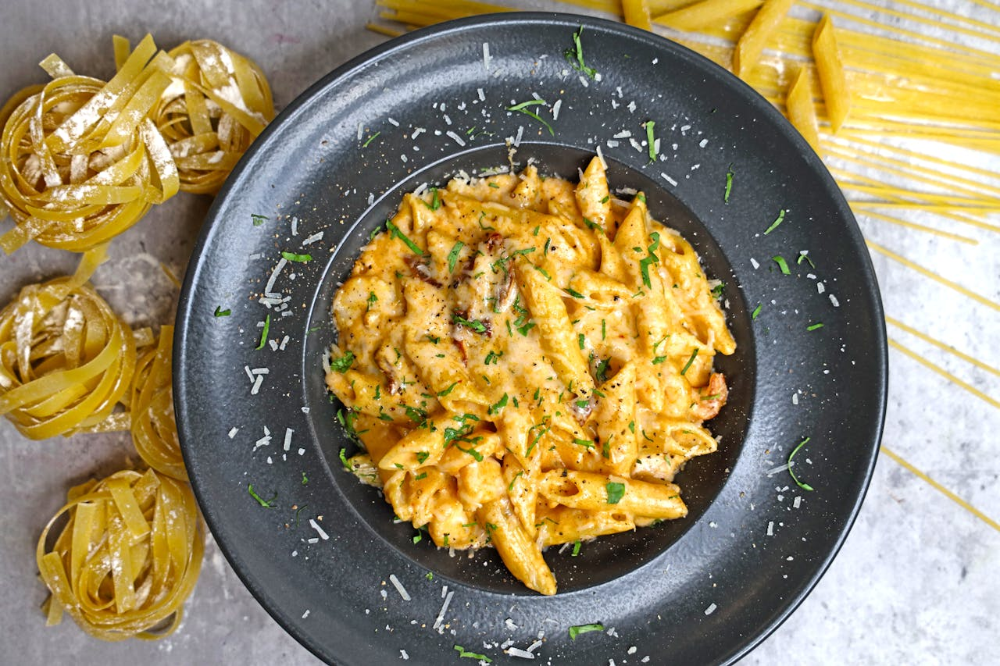

Página Principal
Macarrones con queso y salchicha

Descripcion
Es uno de los platos básicos de la cocina estadounidense. Quiero contarles aquí que en USA, esta es una de las
primeras recetas que aprenden a cocinar de pequeño o cuando se independizan.
En sus orígenes, el plato era como un pudin de macarrones mezclados con queso cheddar inglés. Dicen que durante
la
década de 1930, empezó a fabricarse como un suculento manjar industrial precocinado.
En realidad es un plato muy fácil de preparar, seguramente siempre tengamos en casa varios de los ingredientes
que se necesitan para cocinar este plato y solo en unos 40 minutos estará listo, te aseguro que el resultado es
realmente bueno.
Ingredientes
La receta rinde 8 raciones
- 1 paquete (16 onzas) de salchicha kielbasa totalmente cocida cortada en trozos de 1/2 pulgada.
- 1 paquete (8 onzas) de macarrones (fideos) tipo codo.
- ⅓ taza de mantequilla.
- 1 cebolla pequeña picada.
- 3 cucharadas de harina.
- 2 tazas de leche.
- 1 paquete (10 onzas) de queso Cheddar fuerte, cortado en cubos.
- Sal y pimienta negra molida al gusto.
- 1 taza de pan rallado seco, o más según sea necesario.
Indicaciones para cocinar los macarrones con queso y salchicha
- Cocina y remueve la salchicha kielbasa troceada en una sartén grande a fuego medio de 6 a 8 minutos, hasta
que esté bien caliente
y empiece a dorarse. Retirar la salchicha de la sartén y reservar.
- Llene una cacerola con agua ligeramente salada, llévela a ebullición a fuego medio-alto, añada los
macarrones y vuelva a
hervir. Cocer, removiendo de vez en cuando, hasta que la pasta esté bien cocida pero todavía firme al
morderla, unos 8
minutos. Escurrir bien.
- Precalentar el horno a 175ºC (350ºF). Engrasar un molde para hornear de 9 x 13 pulgadas.
- Derretir la mantequilla en la sartén a fuego medio-bajo, y cocinar y remover la cebolla picada durante unos
5 minutos, hasta que esté translúcida. Añadir la harina, removiendo constantemente para evitar grumos. Cocer
y remover la
mantequilla, la cebolla y la harina durante 2 ó 3 minutos para hacer un roux, y retirar del fuego. Añadir la
leche poco
a poco, sin dejar de remover, hasta que se haya incorporado toda la leche, y volver a poner a fuego lento.
Lleve la
salsa a ebullición y cocínela a fuego lento durante unos 2 minutos, sin dejar de remover, para terminar de
cocer la
harina. Batir el queso Cheddar, unos dados cada vez, hasta que se haya incorporado todo el queso y la salsa
esté
caliente y suave.
- Verter los macarrones en la salsa de queso y remover para mezclar. Añada la salchicha kielbasa cocida, la
sal y la pimienta.
- Vierta la mezcla de macarrones en la fuente de horno preparada y espolvoree el pan rallado por encima.
Hornear durante
unos 20 minutos en el horno precalentado, hasta que las migas estén doradas y el guiso burbujee. Dejar
reposar durante
15 minutos después de hornear, para que cuaje antes de servir.